ta strona jest idealnie dla ciebie. Nauczysz się tutaj podstawowych zagadnień Pythona. Zaczniesz tworzyć własne projekty zaczynając od tych prostych a skończysz na takich, jakich sobie nigdy nie wyobrażałeś.
Zanim zaczniesz się uczyć pamiętaj, że nauka programowania to proces, który nie przychodzi od razu. Potrzeba dużo czasu, zaangażowania i przede wszystkim chęci do nauki. Zrozumienie niektórych zagadnień może zająć ci tygodnie nawet miesące. Ale nie przejmuj się to normalne. Poniżej przedstawiam ci x tipów jak efektywnie uczyć się programowania:
1. Nie śpiesz się. Wiele ludzi chce osiągnąć kosmiczne cele za szybko, przez co się denerwują i rezygnują z programowania po 2 tygodniach nauki.
2. Nie rzucaj się na głeboką wodę. Zacznij od rzeczy prostrzych wraz z postępem nauki przchodzić do coraz badziej zaawansowanych.
3. Bądź konsekwentnym w tym co robisz. Jeśli wyznaczyłeś sobie cel, że dzisiaj uczysz się np 2 godziny dziennie. To się uczysz i nie odpuszczasz nawet jak nie masz ochoty programować. Oczywiście sam zrobisz sobie harmonogram nauki, chodzi o to aby być konsekwentnym.
4. Staraj się samemu dochodzić do rozwiązań problemów. Nie używaj takich programów jak chat GPT czy tym podobnych. Największy postęp zrobisz korzystając z książek i filmach na YouTube. Nie musisz nawet kupować płatnych kursów.
5. Nigdy się nie poddawaj! Nie ważne jak mocno by padało, później zawsze wychodzi słońce. Tak samo u ciebie nie ważne ile razy ci się nie uda, ważne ile razy się nie poddałeś. To podejście z czasem pozwoli ci rozwiązać każdy problem.
Jeszcze jako wisienka na torcie kliknij w przycisk poniżej aby dostać dostęp do linku do kanału pana Kamila Brzeźińskiego, gdzie możesz przerobić podstawy Pythona w 2 godziny. Utrwalić zdobytą więdze, lub nauczyć się czegoś nowego!
Spis Treści:
- 1. Pierwszy program
- 2. Typy danych
- 3. Operatory
- 4. Operatory matematyczne
- 5. Intrukcje warunkowe
1. Pierwszy program
Uwierzyż, jeśli ci powiem że możesz napisać program używając tylko jednej lini? Brzmi absurdalnie, ale to prawda. O to pierwsza metoda, którą poznasz to print, która umożliwi ci drukowanie tekstu, zmiennych i innych rzeczy.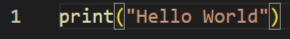
Wpisując to polecenie efekt w konsoli będzie następujący: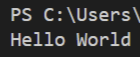
Brawo! Właśnie napisałeś swój pierwszy program w Pythonie!
2. Typy danych
Typów danych jest sporo tutaj natomiast omówimy tylko te najważniejsze.- 
- 
- 
-
int - liczby całkowite (np. 1, 0, -100)
float - liczby zmiennoprzecinkowe (np. 3.14, -0.001) -
str - łańcuchy znaków
(np. "Hello", 'Python') -
bool - wartości logiczne
True/False
Zobacz jak to wygląda w praktyce klikając przyciski. Jak widzisz jest to każdy typ danych, który był opisany powyżej.
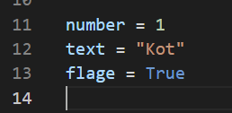 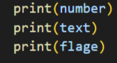 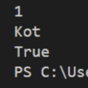
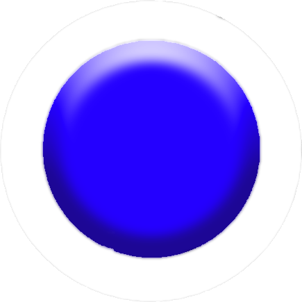

Używając znanej już funkcji print możesz wypisać zmienne w konsoli. Zobaczysz taki rezultat.
Jak widzisz funkcja print Wypisała wszystko w konsoli
3.Zmienne
Czym są zmienne? Zmienne umożliwiają nam przechowywanie danych w różnych nazwach. Powyżej zostały ci przedstawionie ich podstawowe rodzaje.
cokolwiek
4. Operatory
Słyszałeś pewnie o operatorach matematycznych. Co jeśli ci powiem, że w pythonie możesz używać operatorów takich jak w matematyce?
W Pythonie można wykonywać przeróżne operacje matematyczne. Proste i bardziej skomplikowane. Narazie omówimy te prostrze.
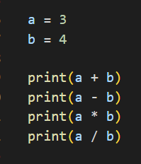
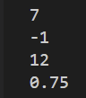
Efekt w konsoli będzie wyglądał właśnie tak. Oczyiście możesz wstawić dowolne zmienne i przypisać im dowolne wartości